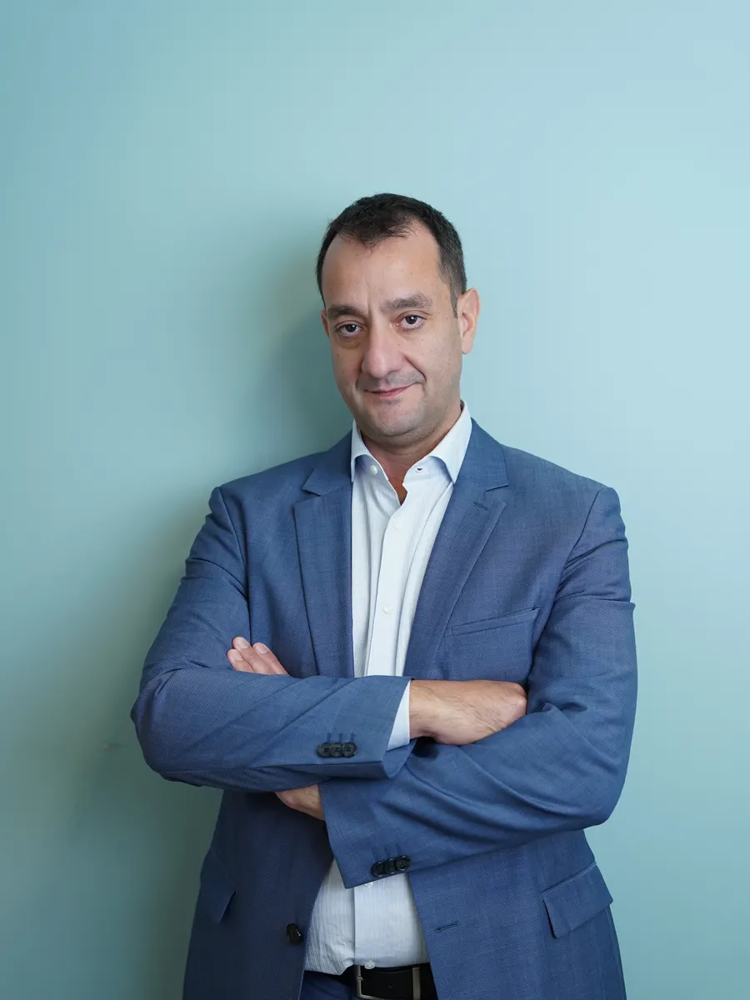
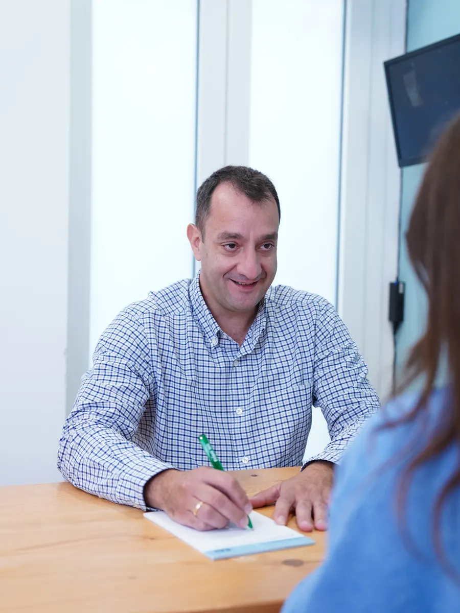
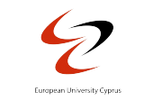
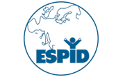
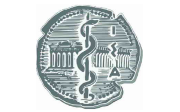
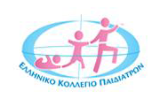

Βιογραφικό
Ο Μάριος Δέτσης είναι παιδίατρος με ιδιωτικά ιατρεία στου Ζωγράφου και στα Βριλήσσια, όπου παρακολουθεί νεογνά, βρέφη, παιδιά και εφήβους. Στο επίκεντρο της φροντίδας του βρίσκονται η πρόληψη, η παρακολούθηση της ανάπτυξης και η ουσιαστική επικοινωνία με τους γονείς, ώστε κάθε οικογένεια να κατανοεί τις ανάγκες του παιδιού της και τις επιλογές που αφορούν την υγεία του.
Από τον Ιανουάριο του 2026 εργάζεται στον βρεφοθάλαμο του ΜΗΤΕΡΑ, με αντικείμενο την καθημερινή φροντίδα των νεογνών, την αξιολόγησή τους πριν από την έξοδο από το μαιευτήριο και τη συμβουλευτική των οικογενειών κατά τις πρώτες ημέρες της ζωής.
Εκπαίδευση & Επιστημονική Κατάρτιση
Είναι απόφοιτος της Ιατρικής Σχολής του Εθνικού και Καποδιστριακού Πανεπιστημίου Αθηνών και ολοκλήρωσε την ειδίκευσή του στην Παιδιατρική στο Νοσοκομείο Παίδων «Η Αγία Σοφία».
Στο πλαίσιο της ειδικότητάς του, πραγματοποίησε εξάμηνη εκπαίδευση στη Νεογνολογία στο Μαιευτήριο «Έλενα Βενιζέλου», αποκτώντας εμπειρία στη φροντίδα των νεογνών και στην υποστήριξη του μητρικού θηλασμού. Έχει επίσης παρακολουθήσει σχετικά μετεκπαιδευτικά σεμινάρια, ενισχύοντας τις γνώσεις του στην καθοδήγηση των μητέρων κατά την έναρξη και τη συνέχιση του θηλασμού.
Διαθέτει δύο μεταπτυχιακούς τίτλους, στη Δημόσια Υγεία και στη Βιοστατιστική, και είναι υποψήφιος διδάκτορας Επιδημιολογίας του Πανεπιστημίου Αθηνών. Έχει επίσης πραγματοποιήσει ερευνητική μετεκπαίδευση στις λοιμώξεις στο Brown University των ΗΠΑ.
Επαγγελματική & Ερευνητική Εμπειρία
Η επαγγελματική και επιστημονική του διαδρομή περιλαμβάνει ιδιαίτερη ενασχόληση με τις λοιμώξεις, τους εμβολιασμούς και την προστασία της υγείας από τις πρώτες ημέρες της ζωής.
Εργάστηκε στο ΚΕΕΛΠΝΟ την περίοδο 2009–2012, αναλαμβάνοντας και καθήκοντα υπευθύνου του Γραφείου Νοσημάτων που Μεταδίδονται με Διαβιβαστές. Στη συνέχεια εργάστηκε στον ιατρικό τομέα εμβολίων της Pfizer έως τον Δεκέμβριο του 2025, με επιστημονικές αρμοδιότητες για την Ελλάδα, την Κύπρο και τη Μάλτα.
Παράλληλα με την κλινική του δραστηριότητα, συμμετέχει ενεργά στην έρευνα και στην επιστημονική εκπαίδευση. Έχει συγγράψει και συνυπογράψει δημοσιεύσεις σε διεθνή επιστημονικά περιοδικά και συμμετέχει ως ομιλητής σε παιδιατρικά συνέδρια. Το πρόσφατο ερευνητικό του έργο επικεντρώνεται στον εμβολιασμό κατά την εγκυμοσύνη και στην πρόληψη λοιμώξεων στα νεογνά και στα βρέφη.
Επιστημονικές Εργασίες / Δημοσιεύσεις
Ο πλήρης κατάλογος των επιστημονικών εργασιών και δημοσιεύσεων βρίσκεται στη σελίδα του επιστημονικού έργου.

Μέλος / Συνεργασίες
Επιστημονικές συνεργασίες και μέλος διεθνών οργανισμών




Υπηρεσίες υψηλής ποιότητας, για κάθε οικογένεια.
Έμφαση στη σωστή ανάπτυξη του παιδιού, στην πρόληψη και στη φροντίδα του άρρωστου παιδιού — με βάση τις τρέχουσες διεθνείς κατευθυντήριες οδηγίες και χρήση φαρμάκων μόνο όταν είναι πραγματικά απαραίτητο.
Κλείστε ραντεβού με τον ιατρό.
Παιδιατρική φροντίδα με επιστημονική τεκμηρίωση και ουσιαστική στήριξη της οικογένειας. Στείλτε αίτημα ηλεκτρονικά ή καλέστε το ιατρείο που σας εξυπηρετεί.
Φόρμα ραντεβού